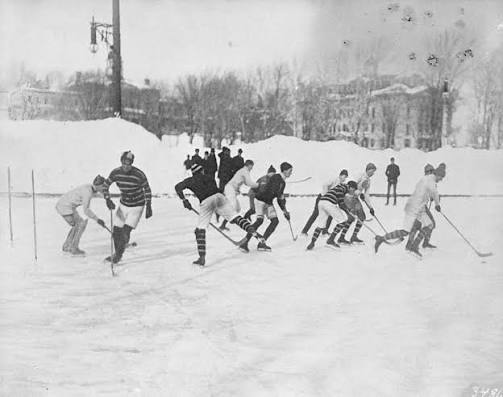
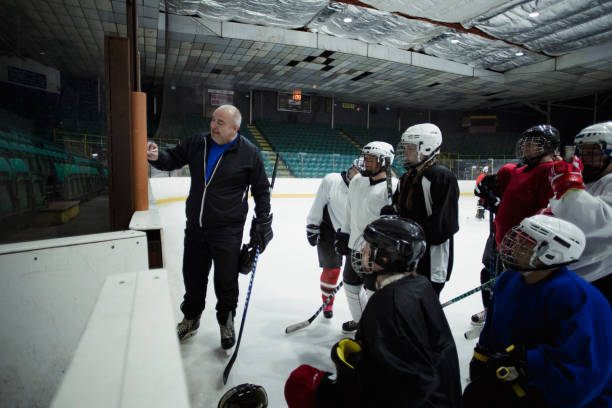

1. Historique du hockey sur glace

Le hockey sur glace est un sport collectif qui s'est développé au XIXe siècle au Canada. Le premier match organisé selon des règles modernes a eu lieu en 1875 à Montréal.
Le hockey masculin est devenu un sport olympique en 1920 et le hockey féminin en 1998. Aujourd'hui, il est pratiqué dans de nombreux pays.
2. Les règles du hockey sur glace

Le hockey sur glace oppose deux équipes qui doivent marquer des buts dans le camp adverse.
- Chaque équipe possède 6 joueurs sur la glace.
- Un match comporte 3 périodes de 20 minutes.
- Les joueurs utilisent une crosse pour déplacer le palet.
- Le gardien protège son but.
- Les contacts dangereux sont interdits.
- L'équipe qui marque le plus de buts gagne.
3. Les entraîneurs

Les entraîneurs apprennent aux joueurs les techniques du hockey et les préparent aux compétitions.
- Entraîneur principal : organise les séances.
- Entraîneur adjoint : aide les joueurs à progresser.
- Entraîneur des gardiens : entraîne les gardiens de but.
Les noms des entraîneurs sont à compléter selon le club choisi.
4. Les catégories
Les joueurs sont répartis selon leur âge. Voici quelques exemples de catégories :
| Catégorie | Âge indicatif |
|---|---|
| U7 | Moins de 7 ans |
| U9 | 7 à 8 ans |
| U11 | 9 à 10 ans |
| U13 | 11 à 12 ans |
| U15 | 13 à 14 ans |
| U18 | 15 à 17 ans |
| Seniors | Adultes |
5. Lieu d'entraînement

Les entraînements de hockey sur glace se déroulent dans une patinoire.
- Une surface de glace.
- Des vestiaires pour les joueurs.
- Des buts de hockey.
- Des bancs pour les remplaçants.
Adresse : À compléter selon le club.
6. Jours d'entraînement
Les entraînements sont organisés en fonction de l'âge et du niveau des joueurs.
| Catégorie | Jour | Horaires |
|---|---|---|
| U9 | Mercredi | 14h - 15h |
| U11 | Mardi | 17h - 18h |
| U13 | Mercredi | 16h - 17h30 |
| U15 | Jeudi | 18h - 19h30 |
| Seniors | Lundi et mercredi | 20h - 22h |
7. Calendrier des matchs

Voici un exemple de calendrier des prochaines rencontres.
| Date | Rencontre | Lieu | Heure |
|---|---|---|---|
| 15/11/2026 | Club A - Club B | Domicile | 14h |
| 22/11/2026 | Club C - Club A | Extérieur | 16h |
| 29/11/2026 | Club A - Club D | Domicile | 15h |
| 06/12/2026 | Club E - Club A | Extérieur | 14h |
Attention : ces rencontres sont fictives.
Le hockey en vidéo
Une vidéo pour se faire une idée du hockey sur glace.
8. Adresse de contact (mail)
Pour obtenir des renseignements sur les inscriptions, les entraînements ou les compétitions, vous pouvez contacter le club par courrier électronique.
E-mail : contact@hockey.fr
Objet : Demande de renseignements ou inscription au hockey sur glace.